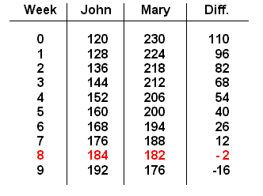

|
John has $120 in his bank account and saves $8 each week. Mary has $230 in her account and withdraws $6 each week. After how many weeks will they have the same amount? What will that amount be?Are you having a sensation of "deja vú" just about now? That is, do you feel you've seen this before? Well, the answer should be: "yes" and "no". Yes: because the action of saving and withdrawing money is present once again. For the "no" part: at least the money numbers for the persons are different. (Then there is a slight change in the title of this page, if you noticed it. The word "Almost" must have some purpose or it wouldn't be there, right?) So, perhaps, just perhaps, the goal of equal balances can't be reached this time. If you have considered this as a possibility, you are well on your way to being an intelligent and observant problem solver. This problem is therefore actually "more realistic" than the previous problem: "UP-down Match Game". If you think about it, it is not too likely that if two people behave in such a way as described in that problem, that their balances would someday "come out the same!" In this new situation, as you will soon discover as you work on it, the balances do not become equal. However, they do come close to each other at some future point, "passing like ships in the night". Our chart strategy is again the order of the day, but this time it might be useful to employ an extra column, to see some important information as it develops.  Now we can alter our style of answer conclusion by stating something similar to this:John and Mary will not have equal balances, but they will be very close in Week No. 8, where the difference is the smallest, $2.
Teacher Commentary
It is recommended that for this problem the students not be warned in advance that the money amounts do not eventually coincide. This is intentional with the hope that they will "discover" it in the natural course of doing the solving process. This little unexpected outcome is a good experience in watching the flow of data carefully and not assuming that just because the two problems appear to be the same, that they are indeed the same. This prepares them to "expect the unexpected" in math problems and to always be alert for subtle or great differences that might arise.One of the main objectives of this lesson is to recognize the concept of "inequality", and more specifically, when the two balances are unequal by the least amount. In Week 7, John's amount was less than Mary's. But in Week 8, the situation was reversed! In fact, the absolute value of the differences was even smaller. This was just the way it happened this time; problems can be easily constructed in which the minimum difference occurs on the earlier week (see Appendix: #2 below). [It should perhaps be noted that negative numbers were given in the chart. That was a result of always subtracting Mary - John during its construction. Whether a given class should utilize this concept should depend on the level of the students involved. It is not essential to this lesson's topic as a whole. Certainly it does provide a natural situation for giving negative numbers an important use!] After reflecting on the "tricky wording" of the problem as given at the top, it might be suggested for students to come up with a new wording that does not deceive" the reader. An example might be this: John has $120 and saves $8 each week. Mary has $230 and withdraws $6 each week. After how many weeks will the amounts of money they have be the closest? And what is the difference between them? Now that equal-amount problems and different-amount problems have been covered, students can now be encouraged to write their own. Writing one's own creations had to wait until this point; it might have been a little difficult for young learners to directly write equal-amount problems any sooner. Now the element of surprise and wonder can enter the process. Whatever numbers are used, there is a meaningful outcome. If the balances match, good; if not, well that's okay too. This then brings up the next natural question: can one know in advance when type of outcome will result? The answer is Yes, but finding the "trick" is a problem to solve in itelf.Appendix
Here are a couple of extra problems to get you started. Answer data in red. 1. John: $234 saves: $6 w = 9 d = $10 $288 & $298 Mary: $370 withdraws: $8 w = 10 d = -$4 $294 & $290 2. John: $180 saves: $7 w = 11 d = $6 $257 & $263 Mary: $351 withdraws: $8 w = 12 d = -$9 $264 & $255 [To return to text above, click here.]
| Comments? Send e-mail. | Back to top | Go back to Home Page | Go back to Contents |